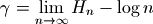
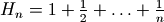
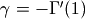
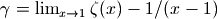
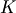
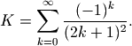
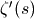
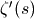

Mathematical constants¶
Mpmath supports arbitrary-precision computation of various common (and less common) mathematical constants. These constants are implemented as lazy objects that can be computed with any precision. Whenever the objects are used as function arguments or as operands in arithmetic operations, they automagically evaluate to the current working precision. A lazy number can be converted to a regular mpf using the unary + operator:
>>> from mpmath import *
>>> mp.dps = 15
>>> pi
<pi: 3.14159~>
>>> 2*pi
mpf('6.2831853071795862')
>>> +pi
mpf('3.1415926535897931')
>>> mp.dps = 40
>>> pi
<pi: 3.14159~>
>>> 2*pi
mpf('6.283185307179586476925286766559005768394338')
>>> +pi
mpf('3.141592653589793238462643383279502884197169')
Exact constants¶
The predefined objects j (imaginary unit), inf (positive infinity) and nan (not-a-number) are shortcuts to mpc and mpf instances with these fixed values.
Pi (pi)¶
- functions.pi¶
 , roughly equal to 3.141592654, represents the area of the unit
circle, the half-period of trigonometric functions, and many other
things in mathematics.
, roughly equal to 3.141592654, represents the area of the unit
circle, the half-period of trigonometric functions, and many other
things in mathematics.Mpmath can evaluate
to arbitrary precision:>>> from mpmath import * >>> mp.dps = 50 >>> print pi 3.1415926535897932384626433832795028841971693993751
This shows digits 99991-100000 of
:>>> mp.dps = 100000 >>> str(pi)[-10:] '5549362464'
Possible issues
pi always rounds to the nearest floating-point number when used. This means that exact mathematical identities involving
will generally not be preserved in floating-point
arithmetic. In particular, multiples of pi (except for
the trivial case 0*pi) are not the exact roots of
sin(), but differ roughly by the current epsilon:>>> mp.dps = 15 >>> sin(pi) mpf('1.2246467991473532e-16')
One solution is to use the sinpi() function instead:
>>> sinpi(1) mpf('0.0')
See the documentation of trigonometric functions for additional details.
Base of the natural logarithm (e)¶
- functions.e¶
The transcendental number
 = 2.718281828... is the base of the
natural logarithm (ln()) and of the exponential function
(exp()).
= 2.718281828... is the base of the
natural logarithm (ln()) and of the exponential function
(exp()).Mpmath can be evaluate
to arbitrary precision:>>> mp.dps = 50 >>> print e 2.7182818284590452353602874713526624977572470937
This shows digits 99991-100000 of
:>>> mp.dps = 100000 >>> str(e)[-10:] '2100427165'
Possible issues
e always rounds to the nearest floating-point number when used, and mathematical identities involving
may not
hold in floating-point arithmetic. For example, ln(e)
might not evaluate exactly to 1.In particular, don’t use e**x to compute the exponential function. Use exp(x) instead; this is both faster and more accurate.
Euler’s constant (euler)¶
- functions.euler¶
Euler’s constant or the Euler-Mascheroni constant
 = 0.57721566... is a number of central importance to
number theory and special functions. It is defined as the limit
= 0.57721566... is a number of central importance to
number theory and special functions. It is defined as the limit
where  is a harmonic number (see harmonic()).
Evaluation of
is supported at arbitrary precision:>>> from mpmath import * >>> mp.dps = 50 >>> print euler 0.57721566490153286060651209008240243104215933593992
We can also compute
directly from the definition,
although this is less efficient:>>> print limit(lambda n: harmonic(n)-log(n), inf) 0.57721566490153286060651209008240243104215933593992
This shows digits 9991-10000 of
:>>> mp.dps = 10000 >>> str(euler)[-10:] '4679858165'
Integrals, series, and representations for
in terms of
special functions include the following (there are many others):>>> mp.dps = 25 >>> print -quad(lambda x: exp(-x)*log(x), [0,inf]) 0.5772156649015328606065121 >>> print quad(lambda x,y: (x-1)/(1-x*y)/log(x*y), [0,1], [0,1]) 0.5772156649015328606065121 >>> print nsum(lambda k: 1/k-log(1+1/k), [1,inf]) 0.5772156649015328606065121 >>> print nsum(lambda k: (-1)**k*zeta(k)/k, [2,inf]) 0.5772156649015328606065121 >>> print -diff(gamma, 1) 0.5772156649015328606065121 >>> print limit(lambda x: 1/x-gamma(x), 0) 0.5772156649015328606065121 >>> print limit(lambda x: zeta(x)-1/(x-1), 1) 0.5772156649015328606065121 >>> print (log(2*pi*nprod(lambda n: ... exp(-2+2/n)*(1+2/n)**n, [1,inf]))-3)/2 0.5772156649015328606065121
For generalizations of the identities  and , see psi() and stieltjes() respectively.
Catalan’s constant (catalan)¶
- functions.catalan¶
Catalan’s constant  = 0.91596559... is given by the infinite series

Mpmath can evaluate it to arbitrary precision:
>>> from mpmath import * >>> mp.dps = 50 >>> print catalan 0.91596559417721901505460351493238411077414937428167
One can also compute directly from the definition, although this is significantly less efficient:
>>> print nsum(lambda k: (-1)**k/(2*k+1)**2, [0, inf]) 0.91596559417721901505460351493238411077414937428167
This shows digits 9991-10000 of :
>>> mp.dps = 10000 >>> str(catalan)[-10:] '9537871503'
Catalan’s constant has numerous integral representations:
>>> mp.dps = 50 >>> print quad(lambda x: -log(x)/(1+x**2), [0, 1]) 0.91596559417721901505460351493238411077414937428167 >>> print quad(lambda x: atan(x)/x, [0, 1]) 0.91596559417721901505460351493238411077414937428167 >>> print quad(lambda x: ellipk(x**2)/2, [0, 1]) 0.91596559417721901505460351493238411077414937428167 >>> print quad(lambda x,y: 1/(1+(x*y)**2), [0, 1], [0, 1]) 0.91596559417721901505460351493238411077414937428167
As well as series representations:
>>> print pi*log(sqrt(3)+2)/8 + 3*nsum(lambda n: ... (fac(n)/(2*n+1))**2/fac(2*n), [0, inf])/8 0.91596559417721901505460351493238411077414937428167 >>> print 1-nsum(lambda n: n*zeta(2*n+1)/16**n, [1,inf]) 0.91596559417721901505460351493238411077414937428167
Khinchin’s constant (khinchin)¶
- functions.khinchin¶
Khinchin’s constant = 2.68542... is a number that appears in the theory of continued fractions. Mpmath can evaluate it to arbitrary precision:
>>> from mpmath import * >>> mp.dps = 50 >>> print khinchin 2.6854520010653064453097148354817956938203822939945
An integral representation is:
>>> I = quad(lambda x: log((1-x**2)/sincpi(x))/x/(1+x), [0, 1]) >>> print 2*exp(1/log(2)*I) 2.6854520010653064453097148354817956938203822939945
The computation of khinchin is based on an efficient implementation of the following series:
>>> f = lambda n: (zeta(2*n)-1)/n*sum((-1)**(k+1)/mpf(k) ... for k in range(1,2*n)) >>> print exp(nsum(f, [1,inf])/log(2)) 2.6854520010653064453097148354817956938203822939945
Glaisher’s constant (glaisher)¶
- functions.glaisher¶
Glaisher’s constant , also known as the Glaisher-Kinkelin constant, is a number approximately equal to 1.282427129 that sometimes appears in formulas related to gamma and zeta functions. It is also related to the Barnes G-function (see barnesg()).
The constant is defined as
 where
 denotes the derivative of the Riemann zeta function
(see zeta()).
where
 denotes the derivative of the Riemann zeta function
(see zeta()).Mpmath can evaluate Glaisher’s constant to arbitrary precision:
>>> from mpmath import * >>> mp.dps = 50 >>> print glaisher 1.282427129100622636875342568869791727767688927325
We can verify that the value computed by glaisher is correct using mpmath’s facilities for numerical differentiation and arbitrary evaluation of the zeta function:
>>> print exp(mpf(1)/12 - diff(zeta, -1)) 1.282427129100622636875342568869791727767688927325
Here is an example of an integral that can be evaluated in terms of Glaisher’s constant:
>>> mp.dps = 15 >>> print quad(lambda x: log(gamma(x)), [1, 1.5]) -0.0428537406502909 >>> print -0.5 - 7*log(2)/24 + log(pi)/4 + 3*log(glaisher)/2 -0.042853740650291
Mpmath computes Glaisher’s constant by applying Euler-Maclaurin summation to a slowly convergent series. The implementation is reasonably efficient up to about 10,000 digits. See the source code for additional details.
References: http://mathworld.wolfram.com/Glaisher-KinkelinConstant.html